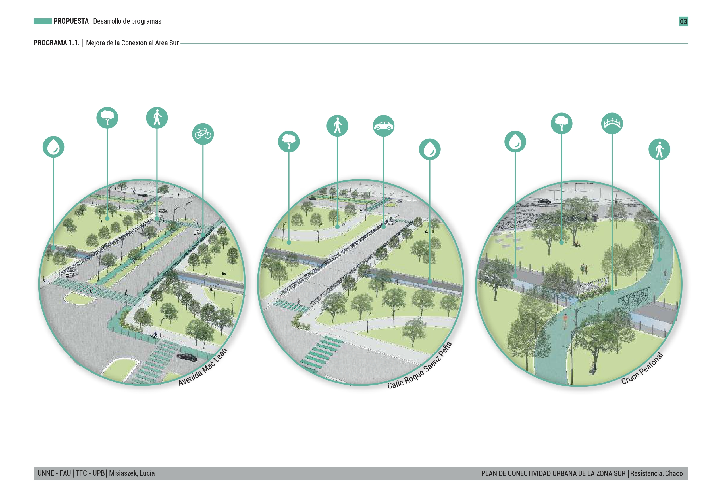
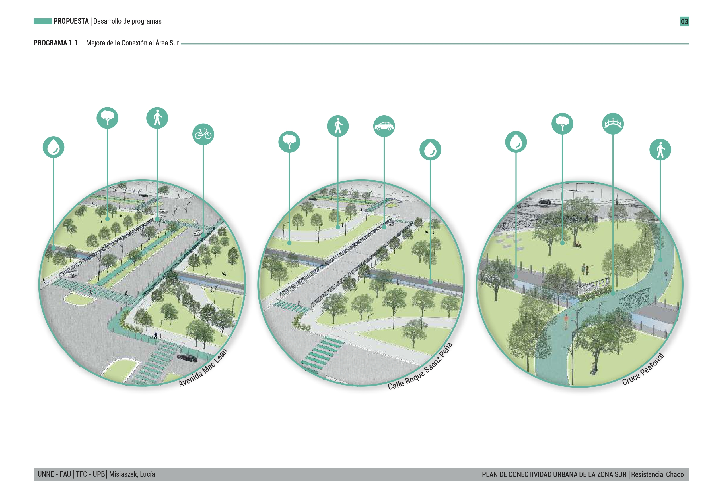

PLAN DE CONECTIVIDAD URBANA DE LA ZONA SUR DE RESISTENCIA
Tesis de Arquitectura - FAU UNNE
El proyecto, enmarcado en un acuerdo con el Ministerio de Desarrollo Urbano y Ordenamiento Territorial de la Provincia del Chaco, consistió en la sistematización y procesamiento geoespacial de información base de la ciudad de Resistencia, validada a través del trabajo de campo y el registro aéreo con drone. Esta base permitió realizar un diagnóstico preciso de la situación en la Zona Sur —apoyado en mapeos, indicadores estadísticos y matrices— para finalizar con una etapa propositiva centrada en estrategias de intervención y su desarrollo proyectual.

Software y tecnologías: QGIS, AutoCAD, Illustrator, Sketchup.

Datasets: Capas vectoriales, imágenes satelitales, datos censales, registro áereo.

Escala: Zona sur de la ciudad de Resistencia, Provincia del Chaco, Argentina.